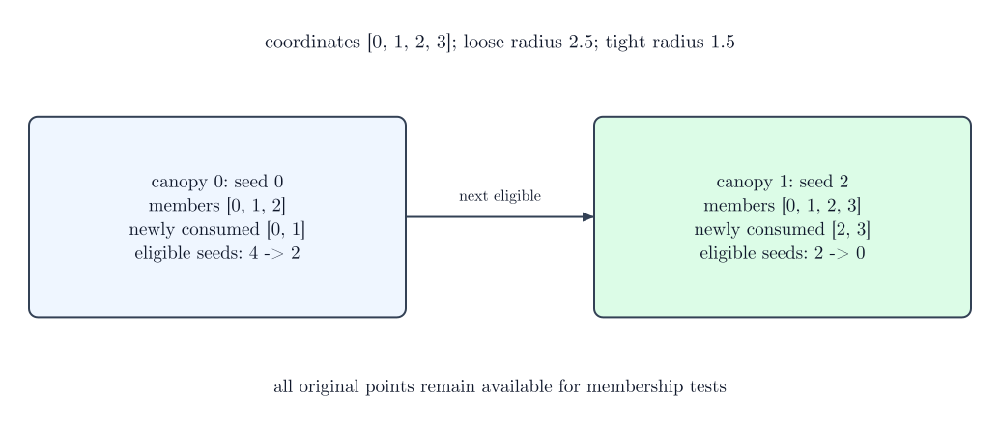
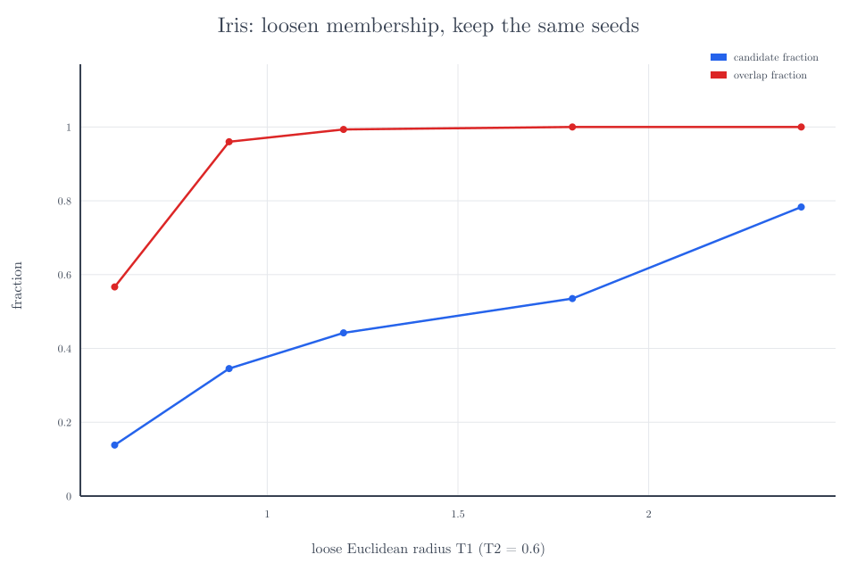
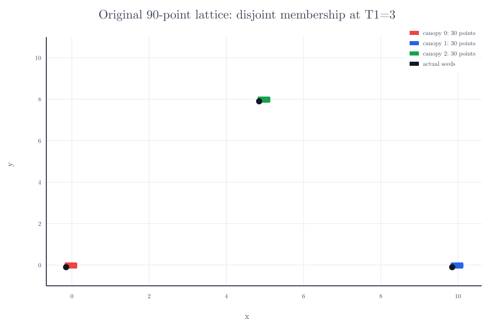
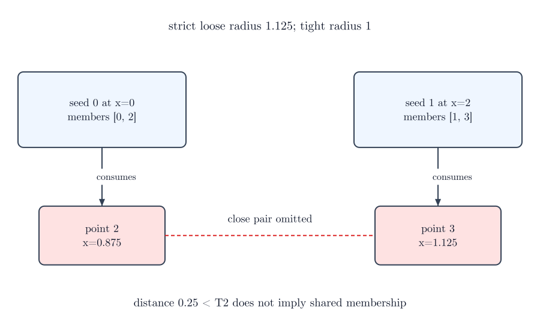

Canopy Clustering: Actual Overlap, Candidate Pairs and Limits
Abstract
Large clustering tasks can require many costly pairwise comparisons. We seek overlapping candidate groups that reduce those comparisons while retaining useful neighbours. Canopy clustering builds such groups. We inspect actual distance decisions on four points, measure candidate-pair coverage on native iris data, and retain the original ninety-point experiment and its threshold sweep. Its points are translated grids, not Gaussian draws. Native C++ now supplies checked construction traces, inverted memberships, unique shared pairs and the reusable grid generator. A four-point counterexample corrects the old claim that loose radius at least tight radius always preserves close pairs. We derive a sufficient metric condition instead. The implementation uses full Euclidean scans and performs no downstream clustering; counts here do not establish acceleration or unchanged clustering accuracy.
Four points: consumed seeds can still join another canopy
Take coordinates 0,1,2,3, loose radius T1=2.5 and tight radius T2=1.5. Point zero seeds the first canopy: members are original ids [0,1,2], while ids [0,1] become ineligible to seed again. Point two is the next eligible seed. Its canopy includes all four points, including already consumed ids zero and one. Consuming a point affects seeding, not later membership searches. Both radius tests are strict; equality is outside. The trace records the actual distance evaluations and eligibility transitions in input-index order.
#include <dm/dm.hpp>
int main() {
std::filesystem::create_directories("build");
const auto trace=dm::algorithms::canopy_clustering_trace({{0},{1},{2},{3}},2.5,1.5);
const auto coverage=dm::algorithms::canopy_coverage(4,trace.canopies);
if(trace.canopies.size()!=2 || coverage.total_memberships!=7 || coverage.shared_pairs.size()!=6) return 1;
std::print("| canopy | seed | point | distance | already ineligible | member | distance < T2 | newly consumed |\n"
"| ---: | ---: | ---: | ---: | :--- | :--- | :--- | :--- |\n");
for(const auto& visit:trace.visits)
std::print("| {} | {} | {} | {:.1f} | {} | {} | {} | {} |\n",visit.canopy,trace.canopies[visit.canopy].center,
visit.point,visit.distance,visit.already_removed,visit.member,visit.within_tight,visit.newly_removed);
dm::graphics::Diagram diagram(65,1100);
dm::graphics::DiagramNodeStyle node;node.width=6;node.height=3.2;node.font_size=19;
for(std::size_t id=0;id<trace.canopies.size();++id) {
const auto& c=trace.canopies[id];const auto& step=trace.steps[id];
node.fill=id?dm::RGB{220,252,231}:dm::RGB{239,246,255};
diagram.node(std::format("step{}",id),{static_cast<double>(id)*9,0},
std::format("canopy {}: seed {}\nmembers {}\nnewly consumed {}\neligible seeds: {} -> {}",
id,c.center,c.members,step.newly_removed,step.remaining_before,step.remaining_after),node);
}
diagram.edge("step0","step1","next eligible")
.text({4.5,2.8},"coordinates [0, 1, 2, 3]; loose radius 2.5; tight radius 1.5",20)
.text({4.5,-2.7},"all original points remain available for membership tests",19)
.save_svg("build/canopy_steps.svg");
std::print("\nActual distance evaluations: {}; coordinate differences: {}.\n",trace.distance_evaluations,trace.coordinate_differences);
std::print("Memberships: {}; overlapping points: {}; within-canopy pair visits: {}; unique shared pairs: {}.\n",
coverage.total_memberships,coverage.overlapping_points,coverage.pair_visits,coverage.shared_pairs.size());
}| canopy | seed | point | distance | already ineligible | member | distance < T2 | newly consumed |
|---|---|---|---|---|---|---|---|
| 0 | 0 | 0 | 0.0 | false | true | true | true |
| 0 | 0 | 1 | 1.0 | false | true | true | true |
| 0 | 0 | 2 | 2.0 | false | true | false | false |
| 0 | 0 | 3 | 3.0 | false | false | false | false |
| 1 | 2 | 0 | 2.0 | true | true | false | false |
| 1 | 2 | 1 | 1.0 | true | true | true | false |
| 1 | 2 | 2 | 0.0 | false | true | true | true |
| 1 | 2 | 3 | 1.0 | false | true | true | true |
Actual distance evaluations: 8; coordinate differences: 8. Memberships: 7; overlapping points: 3; within-canopy pair visits: 9; unique shared pairs: 6.

The lowest eligible index is always selected. Every step consumes its seed, so construction ends with at most n canopies, including when T2=0. Every point is covered: a tight-radius removal implies loose-radius membership because T2<=T1; a point not removed earlier eventually seeds its own canopy, where distance zero is below positive T1. Coverage of individual points does not prove coverage of every close pair.
The original canopy method uses a cheap first-stage proximity measure before more expensive clustering. Its author describes accuracy preservation as conditional on properties of that measure, not unconditional. Our implementation is a deterministic all-original-points Euclidean variant, with no approximate distance or spatial index. See the [author's description](https://www.cs.cmu.edu/~reinf/web/talks-2001/01-03-19.mccallum.html).
Iris: count retained comparisons on native data
The native iris frame has 150 flowers and four measurements in centimetres. We use all four coordinates directly; no species labels, fitting or downstream clusterer enter this calculation. The radius therefore depends on measurement scale and this chosen Euclidean representation. The original dataset order also matters because it controls seed choice. Its species grouping is not shuffled. The [R dataset documentation](https://stat.ethz.ch/R-manual/R-devel/library/datasets/html/iris.html) describes the measurements and ordering.
Fix T2=0.6 and increase T1. The seed decisions depend only on T2 and the input order, so the centres stay fixed. Loose-radius memberships, and hence the set of unique candidate pairs, can only grow. Out of 150*149/2=11,175 possible unordered pairs, the table counts those sharing at least one canopy. Repeated visits to a pair in several canopies do not count as additional retained pairs. This diagnostic explicitly enumerates candidates; it is not a speed benchmark.
#include <dm/dm.hpp>
int main() {
std::filesystem::create_directories("build");
const auto iris=dm::datasets::iris();
const std::vector<std::string> columns{"Sepal.Length","Sepal.Width","Petal.Length","Petal.Width"};
std::vector<std::vector<double>> points(iris.nrows());
for(std::size_t i=0;i<iris.nrows();++i) for(const auto& column:columns) points[i].push_back(iris.double_at(column,i));
std::vector<std::size_t> initial_seeds;
std::vector<double> radii,pair_fraction,overlap_fraction;
std::print("| T1 | seeds | memberships | overlapping points | distance checks | pair visits | unique candidate pairs / 11175 | candidate fraction |\n"
"| ---: | ---: | ---: | ---: | ---: | ---: | ---: | ---: |\n");
for(double loose:{.6,.9,1.2,1.8,2.4}) {
const auto trace=dm::algorithms::canopy_clustering_trace(points,loose,.6);
const auto coverage=dm::algorithms::canopy_coverage(points.size(),trace.canopies);
std::vector<std::size_t> seeds;for(const auto& canopy:trace.canopies) seeds.push_back(canopy.center);
if(initial_seeds.empty()) initial_seeds=seeds;
if(seeds!=initial_seeds || coverage.uncovered_points || trace.distance_evaluations!=150*seeds.size()) return 1;
radii.push_back(loose);pair_fraction.push_back(static_cast<double>(coverage.shared_pairs.size())/11175);
overlap_fraction.push_back(static_cast<double>(coverage.overlapping_points)/150);
std::print("| {:.1f} | {} | {} | {} | {} | {} | {} | {:.6f} |\n",loose,seeds.size(),coverage.total_memberships,
coverage.overlapping_points,trace.distance_evaluations,coverage.pair_visits,coverage.shared_pairs.size(),pair_fraction.back());
}
dm::graphics::RPlot::create().line(radii,pair_fraction,"candidate fraction",{37,99,235},2.5)
.points(radii,pair_fraction,"",{37,99,235},4).line(radii,overlap_fraction,"overlap fraction",{220,38,38},2.5)
.points(radii,overlap_fraction,"",{220,38,38},4).title("Iris: loosen membership, keep the same seeds")
.x_label("loose Euclidean radius T1 (T2 = 0.6)").y_label("fraction").y_limits(0,1.17)
.save_svg("build/canopy_iris.svg");
}| T1 | seeds | memberships | overlapping points | distance checks | pair visits | unique candidate pairs / 11175 | candidate fraction |
|---|---|---|---|---|---|---|---|
| 0.6 | 26 | 256 | 85 | 3900 | 1904 | 1544 | 0.138166 |
| 0.9 | 26 | 645 | 144 | 3900 | 9771 | 3860 | 0.345414 |
| 1.2 | 26 | 1029 | 149 | 3900 | 23223 | 4941 | 0.442148 |
| 1.8 | 26 | 1607 | 150 | 3900 | 53717 | 5980 | 0.535123 |
| 2.4 | 26 | 2024 | 150 | 3900 | 82582 | 8752 | 0.783177 |

A reduced candidate count is useful only if it retains pairs needed by the later method. No second, expensive metric or final clustering accuracy is measured here. The current full-scan construction may itself cost more than a suitable index; we make no claim that this small dataset is accelerated by the diagnostic.
Preserve the original ninety-point experiment
The original code places thirty points on a six-by-five rectangular grid about each of (0,0), (10,0) and (5,8), with offsets -0.15 and -0.1 and spacings 0.05 and 0.04. These are deterministic translated lattices. The reusable translated_grid_2d() API now supplies those exact coordinates in the original order. Actual seeds are the first grid points, at the lower corners, rather than the nominal translation centres.
#include <dm/dm.hpp>
int main() {
std::filesystem::create_directories("build");
const auto points=dm::datasets::translated_grid_2d({{0,0},{10,0},{5,8}},6,5,.05,.04,-.15,-.1);
const auto canopies=dm::algorithms::canopy_clustering(points,3,2.5);
const auto ownership=dm::algorithms::canopy_coverage(points.size(),canopies);
if(points.size()!=90 || canopies.size()!=3 || ownership.overlapping_points) return 1;
const std::vector<dm::RGB> colors{{239,68,68},{37,99,235},{22,163,74}};
auto plot=dm::graphics::RPlot::create();
for(std::size_t id=0;id<canopies.size();++id) {
std::vector<double> x,y;
for(std::size_t p=0;p<points.size();++p) if(ownership.point_canopies[p].front()==id) {x.push_back(points[p][0]);y.push_back(points[p][1]);}
plot.points(x,y,std::format("canopy {}: {} points",id,x.size()),colors[id],3);
}
const auto centres=dm::algorithms::canopy_centers(points,canopies);
std::vector<double> cx,cy;for(const auto& centre:centres) {cx.push_back(centre[0]);cy.push_back(centre[1]);}
plot.points(cx,cy,"actual seeds",{17,24,39},6).title("Original 90-point lattice: disjoint membership at T1=3")
.x_label("x").y_label("y").y_limits(-1,11).save_svg("build/canopy_clusters.svg");
std::print("| T1 | actual seed ids | memberships | distance checks | coordinate differences | pair visits | unique pairs / 4005 |\n"
"| ---: | :--- | ---: | ---: | ---: | ---: | ---: |\n");
for(double loose:{3.0,6.0,9.0,12.0}) {
const auto trace=dm::algorithms::canopy_clustering_trace(points,loose,2.5);
const auto coverage=dm::algorithms::canopy_coverage(points.size(),trace.canopies);
std::vector<std::size_t> seeds;for(const auto& canopy:trace.canopies) seeds.push_back(canopy.center);
if(seeds!=std::vector<std::size_t>{0,30,60} || trace.distance_evaluations!=270) return 1;
std::print("| {:.1f} | {} | {} | {} | {} | {} | {} |\n",loose,seeds,coverage.total_memberships,
trace.distance_evaluations,trace.coordinate_differences,coverage.pair_visits,coverage.shared_pairs.size());
}
}| T1 | actual seed ids | memberships | distance checks | coordinate differences | pair visits | unique pairs / 4005 |
|---|---|---|---|---|---|---|
| 3.0 | [0, 30, 60] | 90 | 270 | 540 | 1305 | 1305 |
| 6.0 | [0, 30, 60] | 90 | 270 | 540 | 1305 | 1305 |
| 9.0 | [0, 30, 60] | 90 | 270 | 540 | 1305 | 1305 |
| 12.0 | [0, 30, 60] | 270 | 270 | 540 | 12015 | 4005 |

For T1=3,6,9, each group contributes thirty memberships and choose(30,2)=435 unique pairs: 1,305 candidates out of 4,005 possible pairs. At T1=12, every canopy includes all ninety points. There are 270 memberships and 12,015 pair visits, but only 4,005 unique pairs. Triple-counting the same pairs would misrepresent the amount of candidate reduction. Construction still makes 270 Euclidean distance evaluations in every row because the seeds remain fixed.
Close-pair counterexample and a sufficient metric condition
Use point ids 0,1,2,3 at coordinates 0,2,7/8,9/8, in that input order. With T2=1 and T1=9/8, seed zero consumes point two and seed one consumes point three. The loose tests are strict: each opposite near point lies exactly 9/8 from the other seed and is excluded. Thus canopies are {0,2} and {1,3}. Points two and three are only 1/4 apart, below T2, yet share no canopy. This directly disproves the old unconditional claim even with T1>T2.
#include <dm/dm.hpp>
int main() {
std::filesystem::create_directories("build");
const std::vector<std::vector<double>> points{{0},{2},{.875},{1.125}};
const auto canopies=dm::algorithms::canopy_clustering(points,1.125,1);
const auto coverage=dm::algorithms::canopy_coverage(4,canopies);
const std::pair<std::size_t,std::size_t> close_pair{2,3};
const bool retained=std::binary_search(coverage.shared_pairs.begin(),coverage.shared_pairs.end(),close_pair);
const auto safe=dm::algorithms::canopy_coverage(4,dm::algorithms::canopy_clustering(points,2,1));
const bool restored=std::binary_search(safe.shared_pairs.begin(),safe.shared_pairs.end(),close_pair);
if(retained || !restored || coverage.shared_pairs.size()!=2 || safe.shared_pairs.size()!=5) return 1;
std::print("At T1=1.125, T2=1:\n");
for(const auto& c:canopies) std::print("Seed id {}, x={}: members {}.\n",c.center,points[c.center][0],c.members);
std::print("Close pair (2,3), distance 0.25, retained: {}. At T1=2, retained: {}.\n",retained,restored);
std::print("Unique pairs: {} -> {}; pair visits at T1=2: {}.\n",coverage.shared_pairs.size(),safe.shared_pairs.size(),safe.pair_visits);
dm::graphics::Diagram diagram(70,1050);
dm::graphics::DiagramNodeStyle seed;seed.width=4;seed.height=1.8;
for(std::size_t id=0;id<2;++id) diagram.node(std::format("seed{}",id),{static_cast<double>(id)*8,0},
std::format("seed {} at x={}\nmembers {}",canopies[id].center,points[canopies[id].center][0],canopies[id].members),seed);
dm::graphics::DiagramNodeStyle point;point.width=3;point.height=1.4;point.fill={254,226,226};
diagram.node("u",{0,-3},"point 2\nx=0.875",point).node("v",{8,-3},"point 3\nx=1.125",point)
.edge("seed0","u","consumes").edge("seed1","v","consumes");
dm::graphics::DiagramStroke missing;missing.color={220,38,38};missing.dashed=true;
diagram.path({{1.5,-3},{6.5,-3}},missing).text({4,-2.6},"close pair omitted",18)
.text({4,2},"strict loose radius 1.125; tight radius 1",20)
.text({4,-4.6},"distance 0.25 < T2 does not imply shared membership",19)
.save_svg("build/canopy_counterexample.svg");
}At T1=1.125, T2=1: Seed id 0, x=0: members [0, 2]. Seed id 1, x=2: members [1, 3]. Close pair (2,3), distance 0.25, retained: false. At T1=2, retained: true. Unique pairs: 2 -> 5; pair visits at T1=2: 6.

A sufficient condition follows from the triangle inequality. Let r>0 be a pair distance we want to protect in the same metric. Any point u is either a selected seed or is consumed by a seed c at distance less than T2, so in either case d(c,u)<=T2. For d(u,v)<r,
If T1>=T2+r, both u and v therefore belong to c's canopy. In particular, T1>=2*T2 protects pairs strictly closer than positive T2. This is a sufficient exact-metric condition, not a necessary one and not a guarantee for an unrelated expensive metric. Floating-point tests near a radius still depend on rounded norms. The example's binary-exact coordinates make its boundary decisions hand-checkable.
Boundaries, work and order-dependent tight-radius effects
T1 must be finite and positive; T2 finite with 0<=T2<=T1. Equal radii are allowed. At T2=0 each point still consumes itself by selection, but no distance passes the tight test; duplicate coordinates therefore each become seeds. A zero-width coordinate row has distance zero to every other zero-width row. Ragged or nonfinite input is rejected before coordinate access. Hypot accumulation avoids squaring huge/tiny differences, while unrepresentable distances may still be infinity and remain outside every allowed finite radius.
Increasing T2 does not universally reduce this greedy algorithm's seed count: it can remove an earlier useful seed and expose several later ones. The final program gives a concrete two-to-three increase, alongside exact budgets and numeric-boundary checks. Input-order dependence is a property of this seed rule.
#include <dm/dm.hpp>
int main() {
const std::vector<std::vector<double>> points{{0,0},{2,0},{2.5,1.5},{2.5,-1.5}};
const auto small=dm::algorithms::canopy_clustering(points,4,1.625),large=dm::algorithms::canopy_clustering(points,4,2.25);
if(small.size()!=2 || large.size()!=3) return 1;
std::print("Fixed T1=4: T2=1.625 gives {} seeds; T2=2.25 gives {} seeds.\n",small.size(),large.size());
const auto zero=dm::algorithms::canopy_clustering_trace({{0},{0}},1,0);
std::print("Duplicate points at T2=0: {} seeds; first seed newly consumed {}, tight test {}.\n",zero.canopies.size(),
zero.visits[0].newly_removed,zero.visits[0].within_tight);
const auto trace=dm::algorithms::canopy_clustering_trace({{0},{1},{2},{3}},2.5,1.5,8);
bool distance_cap=false;try {(void)dm::algorithms::canopy_clustering_trace({{0},{1},{2},{3}},2.5,1.5,7);}
catch(const std::length_error&) {distance_cap=true;}
bool pair_cap=false;try {(void)dm::algorithms::canopy_coverage(4,trace.canopies,8);}
catch(const std::length_error&) {pair_cap=true;}
const auto exact=dm::algorithms::canopy_coverage(4,trace.canopies,9);
bool invalid=false;try {(void)dm::algorithms::canopy_clustering({{0},{1,2}},1,1);}
catch(const std::invalid_argument&) {invalid=true;}
const auto huge=dm::algorithms::canopy_clustering({{0},{1e200}},1.1e200,1.1e200);
const auto tiny=dm::algorithms::canopy_clustering({{0},{1e-200}},.5e-200,.5e-200);
if(!distance_cap || !pair_cap || !invalid || huge.size()!=1 || tiny.size()!=2) return 1;
std::print("Exact budgets: {} distance checks, {} pair visits. One-short budgets rejected: {}, {}.\n",
trace.distance_evaluations,exact.pair_visits,distance_cap,pair_cap);
std::print("Ragged rows rejected: {}; huge-coordinate seeds: {}; tiny-coordinate seeds: {}.\n",invalid,huge.size(),tiny.size());
}Fixed T1=4: T2=1.625 gives 2 seeds; T2=2.25 gives 3 seeds. Duplicate points at T2=0: 2 seeds; first seed newly consumed true, tight test false. Exact budgets: 8 distance checks, 9 pair visits. One-short budgets rejected: true, true. Ragged rows rejected: true; huge-coordinate seeds: 1; tiny-coordinate seeds: 2.
With m seeds, this implementation performs exactly n*m Euclidean norm evaluations and n*m*d coordinate differences, plus membership/eligibility work. Hence worst-case construction is O(n*n*(d+1)), and ordinary storage is O(n+M) for M memberships. Tracing stores each actual distance decision, adding O(n*m) records. It performs no replay. Positive trace budgets are whole-call caps checked before an excess distance; exceptions return no partial result and never mutate inputs.
The coverage diagnostic separately visits V=sum choose(membership size,2) pairs, deduplicates into U unique pairs with an ordered set, and stores inverted point memberships. Its work includes O(V*log(U+1)) plus per-canopy member sorting; storage is O(n+M+U). A pair budget counts before deduplication and throws before an excess visit. This explicit diagnostic cost should not be confused with the cost of a production spatial index or a restricted downstream clusterer.
Native verification compares 6,825 exhaustive ordered small configurations and 1,000 random multidimensional cases with a separate live-list implementation. An independent all-pairs membership oracle checks unique pairs and duplicate visit counts. Five hundred further random inputs/orders check the sufficient metric condition. Tests also cover both counterexamples, exact radii, zero tight radius/dimension, original grid coordinates, seed/pair monotonicity for fixed T2, input validation, huge/tiny norms, ownership and whole-call budget boundaries.
References
- A. McCallum, K. Nigam and L. H. Ungar (2000). Efficient Clustering of High-Dimensional Data Sets with Application to Reference Matching. KDD, 169-178. [Original paper](https://doi.org/10.1145/347090.347123).
- A. McCallum. [Author's presentation description](https://www.cs.cmu.edu/~reinf/web/talks-2001/01-03-19.mccallum.html). The two-stage approach and its conditional accuracy claim.
- R Core Team. [Edgar Anderson's Iris Data](https://stat.ethz.ch/R-manual/R-devel/library/datasets/html/iris.html). Measurement units, species structure and provenance.